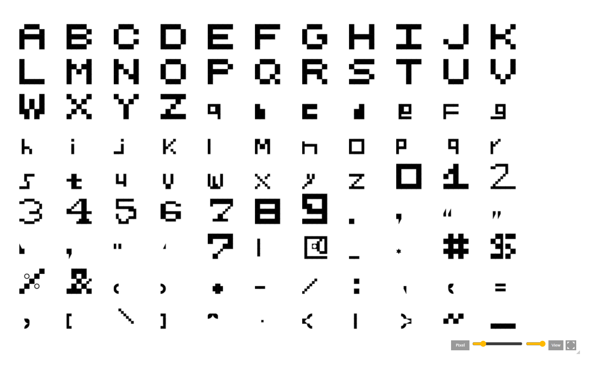
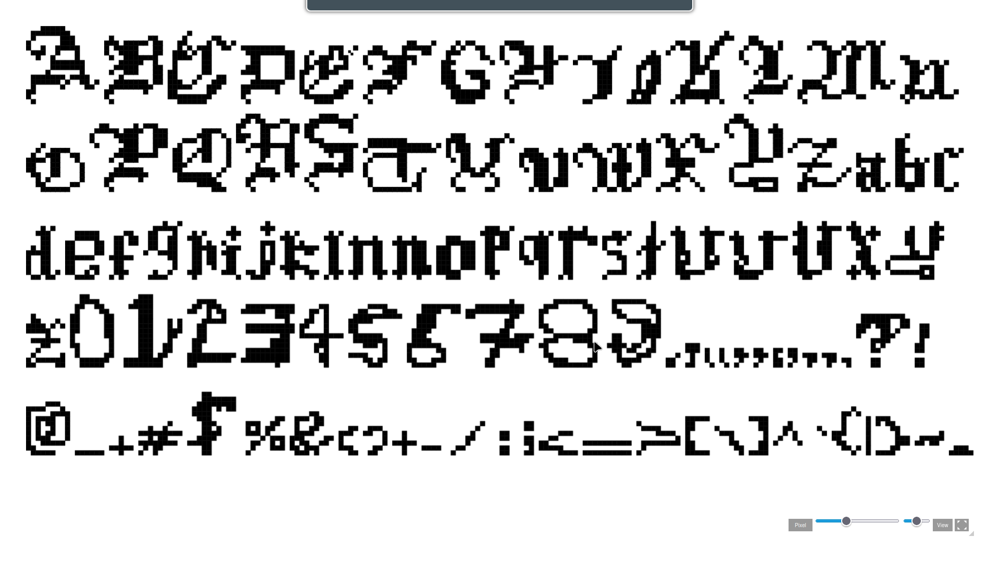
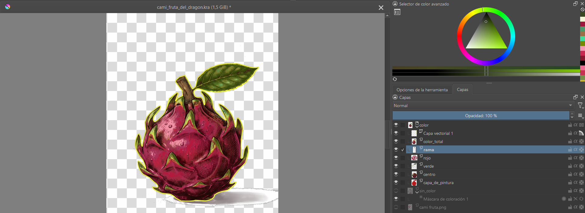

Físico y digital
La primera entrega: imágenes de pinceles trabajadas en físico y en digital. Las seis piezas quedaron en versión sin fondo (PNG transparente, listas para usar sobre cualquier superficie). Al final, la marca del proyecto: Z-R-T-I-S-T · Creatiz.
Z-R-T-I-S-T · Creatiz — la marca del proyecto
La marquita oficial de la entrega: una escena promocional que reúne a todos los personajes del equipo con la firma de su autor. Es la imagen que identifica el trabajo completo de físico y digital.
Consejo para la exposición: al pulsar cada imagen se abre en grande y, en las versiones sin fondo, se ve el damero de transparencia detrás.
Tradicional: letras personalizadas
Diferentes tipos de letras, cada una diseñada punto a punto. Las dos familias se hicieron en FontStruct y aquí se ven vivas: cada tarjeta muestra la fuente renderizada en la propia página, la captura original del diseño y el PDF del proceso en físico. El abecedario completo se abre con un clic, y si quieres instalarlas en un computador, cada una tiene su descarga.
Fuente «cami» tradicional
Cami

Diseño en mosaico: cada letra es un cuadro construido punto a punto.
Fuente «cami» temática gótica
CAMORA X

Letras góticas con carácter medieval, trazo a trazo.
Fruta del dragón
El primer producto terminado en grita (pixel art): una fruta del dragón dibujada completa, punto por punto. La imagen guarda el momento de trabajo en el programa de dibujo, con la fruta terminada sobre el damero de transparencia y la paleta de colores al lado.

Pasa el cursor: lupa de píxelesLa fruta del dragón fue elegida como reto porque mezcla superficies suaves, escamas y gradientes de color: todo lo difícil de representar en pixel art. El nombre del archivo se cambió a «fruta del dragón» para que el modelo entendiera mejor de qué se trataba y no confundiera el resultado.
Productora Cami X de Villa
El proyecto estrella: la fusión entre Cami y David. Una página web completa con la identidad de la productora CAMORA × SUPER: diapositivas, sitio, aplicaciones de redes y video. La página entera se carga aquí mismo, solo cuando la pides.
CAMI X DAVID
Cargando la página completa: si el proyector tarda, usa el botón «Abrir en pestaña nueva», que es el modo más fluido.
Guion técnico: lenguaje de planos
Entrega de CAMORA productora audiovisual: once encuadres para contar una escena, con su definición, su función narrativa y la lectura de la fotografía de cada toma. Trabajo en grupo: el curso se dividió en dos y esta es la entrega de nuestra parte. Fuente base: SENA T.I.C.D. Magazine vol. 2 — Guión Técnico (2024).
Gran Plano General
El personaje no aparece o es diminuto: presenta la situación global.
Plano General
Nos acercamos al plano donde se va a desarrollar la acción.
Plano de Conjunto
Varias personas en distintos tamaños dentro del mismo encuadre.
Plano Entero
La figura entera del personaje: postura y figura completa.
Plano Americano
La figura queda cortada aproximadamente por las piernas.
Plano Medio
Corte aproximado por la cintura: gestos y comunicación.
Primer Plano
Corte por los hombros: protagonismo al rostro y su expresión.
Primerísimo Primer Plano
Encuadre muy cerrado en cabeza y cuello: expresiones intensas.
Plano Detalle
Objetos o elementos muy cercanos: aísla lo importante.
Punto de Vista
Muestra lo que ve un personaje: una relación entre dos tomas.
Escorzo
Parte del personaje cortada en ¾ trasera: profundidad y relación espacial.
Video: movimientos de cámara
La entrega audiovisual completa de CAMORA × SUPER: el video con todos los movimientos de cámara en una sola pieza continua de 113 segundos, acompañado del PDF final de 24 páginas. Se reproduce aquí mismo, sin salir del portafolio.